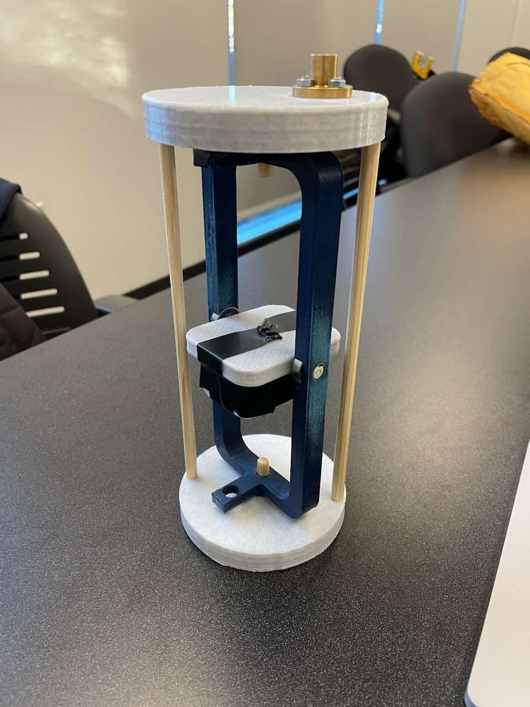

Design Prototype I
This prototype served to demonstrate the feasibility of a mechanical gimbal and the proposed
method of deployment. The assembly process was also subsequently reevaluated in order to completely remove the
usage of adhesives, as adhesive materials caused the ball bearings to be misaligned, resulting in the gimbal
having issues rotating with the dummy weight used.
Future iterations were likely to see the outer gimbal platform being composed of metal (likely aluminum), with
the ball bearings being press-fitted into the platform and into the gimbal base caps. This would have removed
any possibility of misalignment caused by the use of adhesives. Additionally, the various wooden dowels shown
would have been replaced with 0.25" metal rods (also aluminum), which could be purchased from various online
vendors at a reasonable price. Preliminary research suggested that 2x 1l long 0.25" diameter
Aluminum Rods could be purchased for as little as $3 USD before shipping. These rods would also likely be
press-fitted into their respective slots. While the final design would eventually be modified, this prototype
ultimately allowed the team to confirm the viability of using a passive method for rotating the camera
system normal to Earth's gravitational vector.
Due to errors within the design process on the side of the Electrical Division, the final design would be
modified extensively to allow for the inclusion of a 6-inch antenna. These changes are present within
Prototype II, outlined below.
Physical Payload Prototype I

The above image depicts the first prototype for the Payload's mechanical gimbal. Note that this image does not
contain the method for deployment which utilized a NEMA 17 Stepper Motor.
Design Prototype III
The third prototype (right) was generated while the team was designing the payload's deployment system. This
system would house the NEMA 17 Stepper Motor, which would be deploying the payload system out of the rocket
body tube, effectively seperating the payload from the rocket's parachutes completely, avoiding damages
caused by the rocket being dragged around by the primary parachute. This prototype allowed the team to ensure
that the design generated on paper made practical and logical sense in reality. This prototype was used to
fit the NEMA 17 and her associated sensors, power systems, motor drivers, and onboard computers (namely a
Raspberry Pi) These components would be attached to the acrylic electrical platforms, which are the clear
panels shown in the image to the right.
This prototype used 3D-printed end plates as a placeholder for the aluminum bulkheads that would eventually
be used to encase the system. The 3D-printed standoffs would not be replaced due to their structures being
supported by custom-built quarter-inch screws, which were hand-crafted from 1/4" 20 all-threads and
corresponding nuts. Importantly, the acrylic platforms allowed for increased internal space for various
components, and it allowed for the Electrical Division to be able to easily troubleshoot their electronics.
These transparent platforms would prove extremely useful while running design tests leading up to the
rocket's final launch in Alabama.
Physical Payload Prototype II
The above image depicts the prototype of the payload's deployment bay. This design would not see many changes
following the prototype's debut; however, the endplates would be replaced with Aluminum bulkheads to protect
the electronics from black-powder charges, which would be responsible for the main parachute's deployment.
.png)